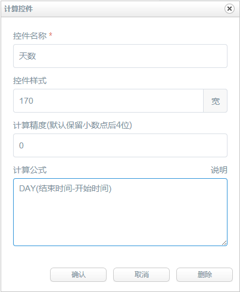
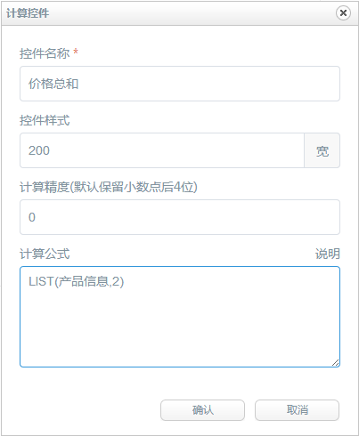

在日常的工作中，填写表单时，经常会存在一些计算项目，比如金额的计算，比如天数的计算，使用计算控件可以简化人员操作，提高准确性。
以下举例说明计算控件的使用方法(以日历控件计算天数为例)：
首先，先建立好需要参与计算的项目，如图建立好开始时间和结束时间这两个日历控件，当然了每个日历控件都有对应的输入框控件
接下来点击计算控件按钮，新建一个计算控件，设定时需要输入计算公式，公式的规则就是四则运算规则，可以利用括号和加减乘除，公式的计算项目就是上面
建立的单行输入框控件的名称，如图：

上面日期差的实例实现的效果如图，而且计算控件的输入内容是不允许修改的。

计算公式支持+ - * / ^和英文括号以及特定计算函数，例如：(数值1+数值2)*数值3-ABS(数值4)，其中数值1、数值2等为表单控件名称。 计算控件支持的函数计算如下：
- SUM(数值1,数值2,数值3...) 对所有数值求和;
- AVG(数值1,数值2,数值3) 输出平均值；
- MAX(数值1,数值2,数值3...) 输出最大值,英文逗号分割；
- MIN(数值1,数值2,数值3...) 输出最小值,英文逗号分割；
- ABS(数值1) 输出绝对值；
- RMB(数值1) 输出人民币大写形式，数值范围0～9999999999.99；
- DAY(日期1-日期2) 输出时间差的整数天数；
- HOUR(日期1-日期2) 输出时间差的小时数；
- DATE(日期1-日期2) 输出时间差，形如：xx天xx小时xx分xx秒；
- LIST(列表控件名,第几列) 计算列表控件指定列的和；
值得说明的是LIST函数，它可以读取列表控件某列数据的和，下面以实例说明一下：
假如设计的列表控件如下图
我们现在用计算控件将价格这一列的数据取出来，添加计算控件，公式书写如下：

实现效果如下：
LIST函数主要用于列表控件数据参与条件设置的情况。
注意：参与日期计算的控件必须为日期类型或者日期+时间类型。